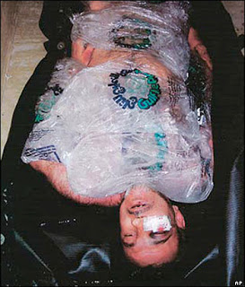

The kid was hurting very bad and they covered all the doors with sheets. Then when I heard screaming I climbed the door because on top it wasn't covered and I saw [name withheld] who was wearing a military uniform, putting his [male appendage] into the little kid's [anus] ... and the female soldier was taking pictures."
The eyewitness account provided by Abu Ghraib inmate Kasim Mehaddi Hilas, describing one of numerous episodes of sexual abuse by U.S. interrogators, including rape, homosexual rape, sexual assaults with objects including a truncheon and a phosphorescent tube, and other forms of sexual abuse and humiliation of detainees.
We need to dispense immediately with the idea that releasing the second batch of photos depicting torture and other abuse at Abu Ghraib and six other installations would create an unacceptable danger to U.S. troops in the region.
Though it seem callous of me to point out as much, we should recognize that people who enlist in the military are paid, trained, and equipped to confront danger. We should also recognize that we do the cause of liberty no favors if we make it easier to invade and occupy foreign countries; indeed, we ought to do everything we can to accentuate the difficulty of carrying out criminal enterprises of that sort.
While we should focus most of our hostile attention on the policymakers responsible for sending the military on imperial errands of that sort, we shouldn't ignore the moral responsibility of every individual who enlists in the military and carries out the killing business such immoral policies entail. Given the pervasive stench of imperial corruption exuded by all of our public institutions, I cannot understand how anybody possessing the moral equivalent of the sense of smell could enlist in the military, or remain therein -- as if that particular organization enjoys some peculiar immunity from the decadence that afflicts the rest of the Regime.
Conservatives and others who revere the founders of our late Republic might recall that the men who won our independence and wrote the Constitution opposed a standing army, not only because it could be employed as an instrument of domestic tyranny, but also because it would offer irresistible opportunities for foreign adventurism. In this, as in so much else, the Founders' wisdom has withstood the passage of time.
Yes, it's entirely likely that releasing the photographs of torture and sexual assault -- including homosexual rape and, God forgive us, the defilement of children -- would lead to dangerous and potentially lethal complications for armed government employees who are killing people and destroying property in Iraq, Afghanistan, and elsewhere, countries they invaded and continue to occupy by force.
If our rulers were genuinely concerned about danger to "our troops," they would release the Abu Ghraib documents and bring the troops home. There -- problem solved! Instead, they are illegally suppressing the photos and keeping the troops in the field -- and now letting it be known that the U.S. military will remain mired in Mesopotamia (which is the more tractable of the two ongoing conflicts) for another decade or longer.
I suspect that the "danger" that preoccupies the ruling Establishment is not that confronted by the troops (about whom that Establishment cares little), but rather the danger potentially posed by those troops if enough of them escape the mental dungeon of official indoctrination and take a good, critical look at the people, institutions, and causes for which they're hired to kill and die.

Exposure to the abuse photos, and the battlefield consequences that would ensue, would tend to focus the mind in that direction. An observation by Maj. Gen. Antonio Taguba, who investigated the Abu Ghraib abuses, seems to underscore my point. "I am not sure what purpose [releasing the 2,000 additional photos of prisoner abuse] would serve other than a legal one and the consequence would be to imperil our troops, the only protectors of our foreign policy --"
Hold it right there: Taguba said "protectors of our foreign policy," not "defenders of our independence" or "guardians of our liberties." The foreign policy referred to entails open-ended entanglements in the affairs of nearly every nation on earth, as well as plundering huge sums from taxpayers to sustain a grotesquely huge military establishment and bribe political elites abroad. That foreign policy cultivates misery and harvests war and terrorism.
Why in God's Name would any decent human being defend that foreign policy in the abstract, much less spill blood to implement it?
Although I wish harm or death on no human being, it seems to me a good idea to adjust the current set of incentives in such a way that at least some American military personnel, as they deal with another gust of blowback, will have an overdue confrontation with their conscience and decide unilaterally to end their service of the world's largest criminal enterprise, the government of the United State (spelling intentional).
Am I trying to incite desertion? Reducing the matter to terms simple enough for Sean Hannity to understand them -- yes, I am, where desertion is the only way to avoid upholding an immoral, unsustainable policy and serving a depraved Regime. Desertion is a moral imperative when continued service implicates a soldier in crimes against God and mankind.
Yes, American enlistees swear an oath in God's Name. Then again, so do Mafiosi. Nobody outside of that criminal fraternity considers it improper for a Mafia footsoldier to renounce his oath. No oath of service can sanctify participation in a criminal enterprise. What should distinguish a republican military from an armed gang is a sacred commitment to the rule of law -- meaning the defense of individual liberty and property, and the enforcement of measures that limit the power of government.
At least some military and law enforcement personnel (or do I repeat myself) have come to understand that the oath they swore requires that they be willing to disobey certain orders. In exceptional circumstances, fidelity to constitutional principles would require wholesale repudiation of military service, rather than selective refusal to comply with illegal orders.
We applauded the courage of those who "defected" from the Red Army during its occupation of Afghanistan. (Interestingly, I don't recall the correct term, "deserted," being used to describe such cases.)
Apart from nationalistic special pleading, I can't think of a way of framing an argument to justify the Soviet deserter while execrating an American stationed in Iraq or Afghanistan who follows the same course of action for the same reason: The triumph of conscience over programming. For those whose conscience can withstand such an assault, another motive might prove effective.

Those who have seen the film Braveheart remember its depiction of the Battle of Stirling Bridge: Huge, serried rows of British infantry, archers, and heavy cavalry assemble across the field from a large, poorly armed, and indifferently motivated throng of Scottish footsoldiers, all of them hapless conscripts forced by their feudal lords to fight.
Near the front of the Scottish host, the lords -- whose allegiances are divided by favors dispensed on them by the English King Edward I -- are seen frantically discussing a negotiating strategy. The camera then pans to a conversation between two serfs, who in disgusted terms discuss the impending sell-out, which will follow the same blueprint as several before it: The armies will briefly skirmish, then a negotiation will ensue leaving the lords richer and the serfs paying more in taxes.
"That's it lads," one of the serfs exclaims. "I'm not fighting for these bastards!"
At some point, if liberty is to have a fighting chance, American military personnel are going to have to experience an epiphany and decide that they're no longer going to fight on behalf of the bastards running the Regime.
A not-entirely-inappropriate video extra
I've been blogging at Lew Rockwell's website for the past several weeks, and my most recent entry deals with this outrage:

On sale now.
Dum spiro, pugno!
44 comments:
I am so outraged by the video and the cops insane actions. Your blog post at Lew Rockwell incidentally cuts off in mid-sentence at the end. Please check into this.
I emailed the Oklahamoa Patrol at choffice.dps.state.ok.us and filed a citizens arrest on Trooper Daniel Martin, Badge Number 606. The charges are aggravated assault, obstructing and Emergency Medical Worker, and endangering the public. I request that all readers of this blog file likewise criminal complaints. Sure they will ignore our request, but if we create enough noise perhaps they will come down hard on this maniac trooper and tone down their blatant thuggery in the near future.
I agree that the photo's should not be suppressed because of the poor reasons and reasoning displayed by the likes of the military commander you quoted.
That said, I believe there are good reasons not to promote a general release the photo's.
1. We already have a polluted public sphere. I do not belong to the over-shrill crowd, but do not believe we should advocate adding any more disgusting images to that which is already put in front of the young and innocent.
2. In addition to our own innocent who need not be subjected to further pollution, there is the dignity of the presumed innocent victims of these disgusting acts. To publicize them, in this world of overly curious where they will soon be publicly identified in their own home communities, exposed again, would be to promote a type of scandal.
3. Further to 2, and of particular relevance to your post, it seems obvious to me that our Powers That Be (PTB) are merely perverting a combination of that point and this next: to release those photo's in a general way, in addition to again abusing the victims, would be to needlessly inflame and tempt the victims, their family's, their compatriots, and, indeed, the whole world, to a irrational revenge that, as irrational, would be out of order and proportion to the offense. It's disgusting but true. Our PTB have a point. If it was my family I would be tempted to murder the nearest American I could find.
Note: this may be, from a cynical, worldly perspective, the easiest surest way to get US troops out of Iraq and Afghanistan, but it would still be immoral.
4. Finally, lest we not forget, there are our enemies to think about, whose souls are still dear to our Lord, and whom we are still called to pray for. They are, here, apparently, our own agents and countrymen who perpetrated these crimes. I don't see how general release of the photo's would serve any legitimate prosecutorial or penitential purpose. I am assuming our prosecutors know who the perpetrators are, where they are, etc. etc. etc., and have it within their writ to arrest, prosecute and punish.
I believe all these reasons can stand on their own or in combination.
Quite frankly the day must come when citizens who are being abused revolt and give one of these hot headed punk ass troopers a sound - well deserved - beating. I am absolutely fed up with the genuflecting hero worship of these thin skinned pricks.
S. Bevin
Thank you for your post. This is a link to the EMT's statement: http://static.ktul.com/documents/emtstatement_0509.pdf
I am incensed over what happened to Maurice White (saw it at LRC before seeing it here). Please keep following up on this.
Not to ignore the major body of your post, which is almost too depressing to comprehend, but regard the EMT. This is the second case in recent months (the first being Mr. Ryan Moats) in which a "citizen" has handled himself in an uncannily calm and rational manner in the face of complete madness. I don't know if that's cause for hope or pessimism, but I suppose it's just a sign that the bad guys ran up against two extraordinary heroic men. I just thought it worth noting.
Will,
I suggest you do not hold your breath if you are waiting for the troops to realize the error of their ways, or better yet those who send them off our shores.
As a former infantryman and green beret who got out in 2006, I can say without a doubt the fealty the members of the military have is not to America or the Republic or freedom. The fealty of our armed forces is solely to the government and those who scream loudest when the flag is waved. That is it. Most are good people and most of my friends are still in (they are extremely misled), they think I have gone insane for rejecting what is being done.
They will never see it. They get new sunglasses every deployment. They get new clothes every deployment. The kit keeps getting better and cooler. They get to earn tax free money for the better part of a year. My friends also get combat and separation pay and if they happen to be in the right units, jump and special duty pay also on a never ending basis with each deployment. They get to keep that money and then buy Harley's tax-free overseas.
This is what is important to them unfortunately. Most have no idea what the Constitution says. Most have no idea who is in Washington from their district or state. They believe Sean Hannity is some kind of genius and the people who vote Democrat are beyond stupid. They would never consider Republicans to be stupid, Republicans vote for a strong "defense" and love the military.
It will never end.
Wow the 2star general had a Freudian slip! DOH! As for oaths in the creators name the nazi's beltbuckles all said "gott mit uns" (god is with us). You could even say the maltese cross on nazi military vehicles is a distorted christian cross. Vile scoundrels always hide behind god and patriotism. The cup of gods wrath is near overflowing and we deserve what we get.
I'll second what Main Coon said...the military will not hesitate to open fire on US citizens if so ordered. After all, folks like Sean Hannity will say "those" people are not "True Amricans". As long as they get cool gear and extra pay, they will do exactly as they are told. I just wonder when and in what manner will the fecal matter hit the fan and the troops will be called out to gun down US citizens, with skinhead pukes like Trooper Martin gleefully helping out. I also wonder how many Americans will stand up and fight back.
So we occupy the land where Babylon once stood, and we now have become Babylon as the Apostle John described her.
To Maine Coon: Oh it will end allright - when the money runs out!
When I read posts like this one, plus the story of the insane trooper, it is very difficult for me to restrain myself from fantasies of "being as God".
The Vanishing Husband and the NYPD
http://www.myfoxny.com/dpp/news/investigative/090520_The_Vanishing_Husband_and_the_NYPD
God bless you Will for having the fortitude to look into this pit of sin and make us look at this mierda.
The fact that we do not release the pictures or initiate trials for torture, kidnapping, rape and murder against the entire upper echelon of the Bush Administration is a national shame.
That shame is now too great for this gringo to keep swallowing.
I'm out of here. Chile lindo ya voy
The only way for it to end is in tragedy. The U.S. military "needs" to lose on the far flung sands of Mesopotamia and should it meddle with Iran I can see that happening. The sad irony of all that bloodshed will be shocked idiotic Americans being whipped into seeking revenge believing yet more lies about the noble sacrifices made. Has it ever been different? No. And because it has worked so well in the past you can count on it being used once more. Only I believe, like William Lind, the U.S will lose and may very well push the big red button to murder countless innocents because it feels it has no choice. It does, but its too cowardly to admit it. Those who point out all the hypocrisy will be marked, once again, as Anti-American and denounced from on high. Long after the dust settles and the bones buried will we have pointy headed "analysts" clucking about this or that with their 20/20 Monday morning quarterbacking. Will we have a real revolution HERE to set things straight? Will those wishing to steer the nation or separate themselves from this current evil government be branded as traitors and terrorists? How were the secessionist colonists portrayed by the royalists back in the day? I think you already know the answer to that one.
Christopher, you're wrong if thinking by suppressing the evidence will bring anyone to any sort of justice. That just won't happen. Why should it? Why should an already corrupt government and its minions seek to "willingly" prosecute itself into prison? Not going to happen. Never will unless you blow the doors off of their dirty secrets. Yes soldiers will be targeted but thats because they're a visible presence to an invisible policy instigated thousands of miles away. Military service people, those mostly not in command, should have woken up long ago and smelled the coffee and simply refused to do any further evil, and its best to avoid the military all together. And as a former serviceman I know what I'm talking about. Do I expect it to happen? No. They're culled from the same stupid piece of cloth that insulates most ignorant Americans.
good news...http://news.yahoo.com/s/ap/20090529/ap_on_re_us/us_cop_shoots_cop
mongol Doc Ellis 124
Mot
As a preliminary matter, what does 'unless you blow the doors off of their dirty secrets.' The fact that we are writing about this here indicates that the subject under discussion is not secret.
More concretely, I do not write of suppressing evidence so much as it's proper use. To illustrate: Per 1, do you wish to place a photo of a rape in a place where my innocent and immature 8-year-old niece might see it? A general release would stand a good chance of putting it on a publicly viewable tv, or on the cover of a publicly displayed newspaper. So you will agree a general release likely to result in general public dissemination is inadvisable on that point. 2. If it was your brother raped, would you like to see a photo of it on a billboard, or would it's proper use, restricted to a duly constituted court, suffice? You see my point? 3. What if it were your neighbor who was the rapist? You might wish him punished, but legitimately fear a general release in that a vigilante might harm you and yours by mistake. 4. Further, what if you knew the neighbor to have behaved well as your neighbor? You might still wish him punished to the full extent of the law, but that punishment should not be cruel or unusual, wanton or inflamed, sadistic.
The plain fact of the matter is I agree with your sentiment of disclosing the information, but wish the argument was clarified by a discussion of the method of release. Further, as I alluded to above, I think we probably agree that our cynical governing officials will suppress the photo's even to the extent of avoiding prosecutions; they will use a combination of legitimate reasons like I have given, and illegitimate reasons like their own cowardice, greed, sloth, pride and arrogance. Meanwhile, I am also persuaded that those who have and are seeking to obtain this information --e.g. journalists, do not do so exclusively and universally from the purest of hearts. In fact, now that I think about it again, maybe the biggest scandal of them all is that they are leaching these photo's out bit by bit, satiating our need for justice, inurring us to a false sense that justice is being done. Maybe the first we should have heard of this was a report years ago starting something like this, "Today several high-level US officers, as well as enlisted men and women, and several Iraqi agents, were executed by firing squad for heinous acts of abuse towards Iraqi prisoners of war and civilians, according to a Pentagon statement."
Chris, thanks for the response. American "media" outlets are so beholden to the official party line that anything you DO happen to see is a fortuitous accident. They are for the most part unofficial government organs spewing Big Brothers Lies. My late father once told me that if you really wanted to know anything about this country you had to go to the foreign press. He knew this having spent close to twenty years in the military living abroad. While living overseas you get a good dose of reality that would never get by the censors in our supposedly "free" press. Thats an oxymoronic term if there ever was one. So many Americans are so insulated from reality that the very idea we would need to hold a debate on releasing the truth in all its ugliness is quite honestly absurd. Its like watching Pharisees arguing over how to deal with that pesky Jesus fella and all those uncomfortable issues he raises! Better to bury him and his ideas before things get out of hand. Sure you may want to protect little ones from something like that on the Boob Tube, I'm in agreement with that, but then again most of the garbage on the idiot box is just garbage! It's mostly pablum to induce you to purchase more junk you cannot afford, follow the social heard and get worked up about stupid things you needn't be worried about anyway. Best to just read and keep the portal to hell turned off or used simply as a video replay device.
The video from Oklahoma was quite frankly surreal. What kind of a nut would stop an ambulance on the way to the hospital!
Thank you Will for reporting this silliness. I also appreciate George for his document search. That testimony says it all. The only thing the Thug could spout as law was "failure to comply".
We may have to have a few brave men be killed by these thugs if we should all "fail to comply" but then the Just cause of Freedom will always overcome the dark chaos of tyranny.
I still say that we need some brave men to step up to the plate and volunteer for ride-along or police auxiliary in order to infiltrate the "other side" and keep tabs or sabotage their supplies. We need to know what is happening behind the lines of freedom.
There will come a time when we will have to sacrifice our lives to save our families from this type of lawlessness.
Main Coon and Allen Owen, you're both spot on, as is Anon 6:04 (I too have wondered how "loyal" to the Establishment the mercenary forces will actually remain when the scrip with which they're paid becomes worth less than the toilet paper with which they wipe their backsides and when they get word that their own families are without food, clothing, or shelter after the dollar's collapse).
Still, as I've said before both here and elsewhere, I simply do not see cause for optimism over the question of whether "the troops" will "do the right thing" when ordered to open fire on their fellow citizens and impose centralized tyranny. Most of these hapless, brainwashed creatures have NO concept whatsoever of genuine freedom or the founding principles of this nation and are conditioned to blindly and reflexively obey any order issued to them by "higher authority" (this is doubly true of the officer corps, especially those who are service academy graduates). Sure, there will no doubt be isolated incidents of principled resistance, but they will be just that - isolated incidents that will be harshly dealt with by peers and seniors before the influence of such acts spreads through the ranks (imagine sharks in a feeding frenzy or wild dogs tearing apart a weaker member of the pack). I think that the bulk of "liberty lovers" know this to be the case, as evidenced by their extreme reluctance to even address the issue of whether or not or how to resist the acts of institutionalized violence committed by their fellow citizens enthralled by the State.
As for the Oklahoma EMT arrested by the copscum, I recall an old saying we had in the Navy decades ago: "Never, EVER piss off the following four people: the mess cook who prepares and serves your food, the postal clerk who delivers your mail, the disbursing clerk who prepares your paychecks, and the hospital corpsman who will someday save your life." Evidently Brainless Copscum Martin didn't have the benefit of such wisdom. He'd better hope that he isn't shot (in the line of duty or not) in the near future, because somehow I have a feeling that the EMTs will suddenly discover "higher priority calls" in such an event and that Martin will just have to "take a number and wait."
i think judge napolitano is right -- the video camera is the new gun.
this stuff has been going on all along, even though the incidents are increasing. thanks to technology, what was only heard about (if that) can now be seen.
my next cell phone will have a whole lot of memory!!
and those photos should be released. not releasing them is just sad. it's like protecting a crime and its perpetrators. this stuff needs to get out so people realize that a uniform does not make you a saint.
...and so that those responsible can be punished.
rick
will,
i just noticed. did they put the guy in the first picture under ice?
man people are sick.
rick
"I cannot understand how anybody possessing the moral equivalent of the sense of smell could enlist in the military, or remain therein.."
Well, I must say you must not get out very often. Most people are so ignorant and so passive when it comes to political economy and the true nature of current events, it staggers the educated imagination. People can be very well educated in different ways. A man can be a first rate auto mechanic or chemist or computer scientist and no less than nothing about what you discuss in this blog. They just don't give a shit, so they may as well do anything the government says. Hence, the town where I live is vastly populated by mindless neocons, politically speaking. Most of these people would give you the shirt off their back if you asked for it, but they still believe George W Bush is a great Christian man and president, and that military service is a call from Heaven.
Christopher,
One appreciates your desire to spare the feelings of your 8-year old niece. However most people in this America, not only your niece, just do not wish to know the ugliness done in their name and supported by their taxes and by their everyday actions. (Such as driving a gas-guzzling SUV.) Out of sight, out of mind.
I encourage all readers to go to this site below, of photos from Iraq, both of Iraqis and US servicemen, and ask yourself if what George Bush and Dick Cheney did - baldly lying us into an illegal war - was justified, so that America could continue to have cheap gasoline, in which noble ambition Cheney failed miserably anyway.
http://mindprod.com/politics/iraqwarpix.html
After the first picture of the US soldier at the top, you need to scroll down past the links to the articles, and you will come to the other photos below that. It makes our complaints about police abuse in this country seem at one moment ridiculously silly, and at the same time terrifying to contemplate that one day, if we continue as we are, these photos may happen to us too.
Do please pass these on to your Christian friends who support George Bush, and ask them if they believe Jesus is pleased at what we have done. If they say yes, then perhaps Jesus will also be pleased when it happens here.
Let us hope God is a merciful God, and not merely a just God. Otherwise we are screwed.
Enjoy.
Yours sincerely,
Lemuel Gulliver.
The effects of the use by the United States of America (the land of the free and the home of the brave) of White Phosphorus bombs in Fallujah, Iraq:
http://www.uruknet.info/?p=m10211&l=i&size=1&hd=0
Note these are the same bombs used on civilians by Holy Land Israel recently in Gaza, (their attack which ended on January 19, 2009 - the very last day of the presidency of George W. Bush.)
Bet you will never see these photos "released" by either Obama or the US media.
Lemuel Gulliver.
List of 45 atrocities committed by US soldiers in Iraq:
http://mindprod.com/politics/iraqatrocities.html#ATROCITIES
After viewing the photos I gave you the links for, ask yourself what the aftermath of those listed atrocities probably looked like.
Lemuel Gulliver
"I do solemnly swear that I will faithfully execute the office of President of the United States, and will to the best of my ability, preserve, protect and defend the Constitution of the United States." - George W. Bush, January 20, 2001
"I do solemnly swear that I will faithfully execute the office of President of the United States, and will to the best of my ability, preserve, protect and defend the Constitution of the United States." - George W. Bush, January 20, 2005
"I don't give a goddamn. I'm the President and the Commander-in-Chief. Do it my way." ["Mr. President," one aide in the meeting said. "There is a valid case that the provisions in this law undermine the Constitution."] "Stop throwing the Constitution in my face! It''s just a goddamned piece of paper!" - George W. Bush, November 2005.
And THIS is the country that hanged Nazi war criminals at Nuremberg??? Like I said elsewhere, this country has become one more turd floating away down the sewers of history.
Doc Ellis: Oh, the irony. A cop, with gun drawn, chases a man who broke into his car, and (I’m guessing), fully intends to shoot him in the back, when YIKES! he himself is shot in the back by another cop. Tears in my eyes as big as horse turds.
“…it is too early to say whether anyone was at fault, said police spokesman…” WHAT? How can that be? Both shooter and shootee were cops so weren’t they both following “standard police policy” concerning the use of deadly force which includes shooting fleeing suspects in the back, and therefore it couldn’t be anybody’s fault could it, isn’t it just another “tragic mistake?”
Just in case it goes to trial, and just in case it’s tried before an all-white jury, the cops tell the usual lie about fleeing suspects after they’ve shot them dead: he was turning toward us, you see, turning toward us, and we felt our lives were in danger so we shot him in the back just as he was turning, yes, that’s the ticket.
George @7:51 gave this link: (http://www.myfoxny.com/dpp/news/investigative/090520_The_Vanishing_Husband_and_the_NYPD), which didn’t work for me, so maybe this one will. The lesson is, the cheerful news reporter tells us, is when you leave your house, it’s a good idea to carry ID, hahaha! Don’t let this happen to you, hahaha!
LG,
george bush never made that comment about the constitution being a GD sheet of paper. however, his actions show that is what he thought of it.
rick
"Imperil our troops" and "national security" are bogus justifications for covering up government wrongdoing. We are nearing a point where absolutely no evidence of official criminality will be allowed to see the light of day. If smidgens of information are ever leaked they will be swept under the rug so that the country can "move ahead".
Yes, yes... Carry I.D., papers, identification, passport, dog tags, permission to move about after hours within our "freedom zones"? etc. etc. Did the founders have to deal with this?
"I too have wondered how "loyal" to the Establishment the mercenary forces will actually remain when the scrip with which they're paid becomes worth less than the toilet paper with which they wipe their backsides and when they get word that their own families are without food, clothing, or shelter after the dollar's collapse"
Liberranter, there is one way they can be made to remain loyal--Read Jack London's "The Iron Heel", which was written in 1908. It inspired Orwell to write "1984" You have to hold your nose on London's promotion of socialism, but nevertheless there are nuggets of truth in the book on how a tyranny would divide and conquer it's citizens. In his book, the mercs are established them as a "caste", along with skilled craftsmen, given special privileges by the powers that be.
The military and militias (Nat'l Guard)is disbanded, as they still retained an oath to defending the Constitution--The mercs of course, are only loyal to the leaders. You can find a public domain online version of this book to read if you Google it.
MoT: I think the founding fathers would be pleased because they didn’t trust the masses either. Besides Hamilton’s well-known contempt, there are the People-Are-Stupid letters exchanged between Washington and others. In 1786, John Jay wrote to Washington: “The mass of men are neither wise nor good…” to which Washington replied: “We have probably had too good an opinion of human nature… Experience has taught us, that men will not adopt & carry into execution, measures the best calculated for their own good without the intervention of a coercive power.” GW to JJ, 1787: “…mankind are not competent to their own government, without the means of coercion in the Sovereign.” GW to Madison, 1787: “I have my doubts whether any system without the means of coercion in the Sovereign, will enforce obedience to the Ordinances of a Genl Government.” I think they would be jealous.
Most of these letters can be found here, or Washington’s anyway.
Anon 4:06:
That's probably the only Jack London story I don't recall ever reading. I'll have to track it down and do so.
"Open Letter" to Military General Officers
http://www.youtube.com/watch?v=g_yHY9hFl94
Louis
Bobby, Wow! Well, well.... Some more inconvenient truths that somehow never managed to get into my history texts in skrool. Based on just those brief snippets between GW and JJ you get the impression that they knew this well ahead of time, before the Declaration and Constitution were "crafted", so that all of the flowery rhetoric embodied by those pieces of paper only serve to make them eloquent works of poetry and and a grand illusion.
I just thought of this... Has anyone looked into those clowns in Oklahoma and elsewhere to see if they're "vets" from you-know-where?
Yes, Will, you are absolutely correct (as usual). I always give the widest possible leeway to soldiers in active combat. When there is any question of their safety or the threat to their lives, I don't look for them to act under any restraint at all. Their job is to obey orders and destroy the enemy, and they put a sacred trust in their civilian leaders to only send them into battle when it is absolutely necessary.
However, even with the widest possible leeway, there is no justification for perpetrating the kinds of crimes you describe here. It is every soldier's duty to refuse that order. I would not want soldiers who did not commit these acts killed or maimed because of them, but nevertheless the evidence must be released to the highest authority over these soldiers - we the people. Perhaps when we see how bad things get in an unnecessary war, the American people and the media will not cheer the next adventure as if our soldiers were going to a high school football game instead of off to kill or be killed.
Actually, there was and is an active, anti imperialist war movement within the
us military. Im surprised you dont know of it. I was part of it when I was IN Viet Nam- when I figured we were up to no good- and after I came back to the States. Google "Sir, No Sir" a very good docuentary of the time, look up Viet Nam Veterans Against the War, Iraq Veterans Agaist the War, and Courage to Resist, for starters.
All these groups could use some support- they are helpin anti constitutional wars resisters all over the country.
They might be young, but most o them aint stupid.
Well put Will,
Herbert Spencer summed it up nicely in 1902, “When men hire themselves out to shoot other men to order, asking nothing about the justice of their cause, I don’t care if they are shot themselves.”
http://praxeology.net/HS-FC-20.htm
Mike
Dear Mr. Grigg,
May God forgive us is an apt response to this wickedness, which I cannot bear to read in its entirety. What is even worse are the Christians (?) who defend this type of wickedness and say we will be vulnerable to the enemies of our nation if we stop committing such atrocities! One has to wonder if they are speaking from ignorance or unregenerate hearts. Thank you for helping expose it, and yes, may God forgive us; but I think this very well could be one of the final nails in our coffin as a nation.
I've seen this video from Oklahoma go viral from the beginning, along with dozens of other outrageous abuses by the police against citizens everywhere. I've seen the "boot to the face" video, the 72-yr old grandma getting tazed, the man shot in the head point blank while laying on the ground cuffed, and too many more to list here.
I am beginning to think that we are on the very edge of where the government will begin using naked, widespread, unrestrained violence against everyone for no reason whatsoever. I've studied Dr. Rummel's "Death by Government" website among other things, and I get the sense that we're reaching a tipping point with official violence against innocent citizens. A tipping point that will lead inevitably to the people of America (the freedom-lovers, at any rate) declaring war against the "jackbooted thugs" who tarnish everything that used to be good about the police, the military, and our government in general.
We have become a totalitarian police state. While I have worn a badge my entire adult life, I have also resolved to lay it down and quit my profession when there is nothing honorable left about it. I believe that day is just about here. When Americans take arms against those who falsely swear to serve and protect in order to defend themselves against imminent harm, you will find me wearing a different uniform, and I will no doubt be labled as a "bad guy" by the real terrorists.
You see, my dad was one of those old-school cops that would ride tall, shoot straight, and always speak the truth. He taught me to measure myself according to God's yardstick, not that of my peers or even the government. And I suffer from a malady that comes from having touched and been touched by the Liberty Bell. I know that there are cops out there who also love Liberty, and who are Oath Keepers... and my consuming fear is that good men and women will get caught in the open between the jackbooted thugs and the pissed off Americans who are very close to implementing some 'street justice' of their own.
Post a Comment